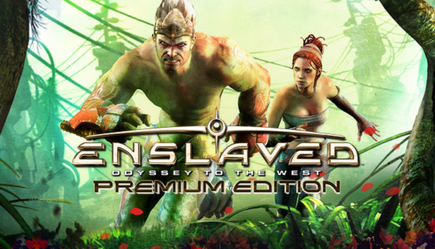
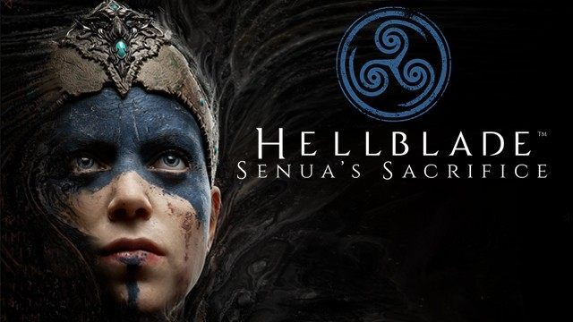
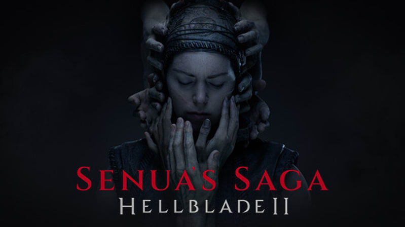

Ninja Theory
Ninja Theory é uma desenvolvedora britânica de videogames aclamada pela crítica, sediada em Cambridge, Inglaterra., que opera como um estúdio próprio da Xbox Game Studios. Eles são mundialmente reconhecidos por sua narrativa cinematográfica, design de áudio imersivo e títulos que exploram temas profundos de psicologia e saúde mental
Fundado originalmente em março de 2000 como Just Add Monsters, o estúdio operou sob o nome de Argonaut Games antes de uma aquisição por parte da gestão que o renomeou como Ninja Theory.Sucesso inicial: Eles construíram uma reputação com títulos de alto orçamento, repletos de ação e com foco na narrativa para PlayStation e Xbox.Aquisição da Microsoft:Em 2018, o estúdio foi adquirido pela Microsoft, tornando-se um Xbox Game Studio oficial.


